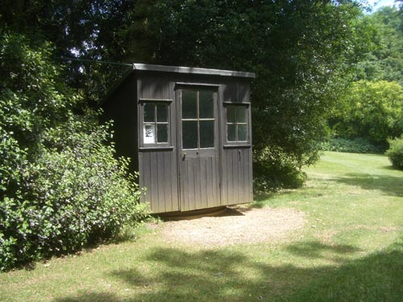

| < | > |
| Shaw's Corner | [2006-06-27 12:27] |
the first texts to make me think that i could think were the long prefaces Shaw attached to his plays - i still have my old schoolboy copy of Androcles and the Lion - with three pencil underlinings
They may not be the salt of the earth, these Philistines; but they are the substance of civilization; And as they know, very sensibly, that a little religion is good for children and serves morality, keeping the poor in good humor or in awe by promising rewards in heaven or threatening torments in hell, For example, the shedding of innocent blood cannot be balanced by the shedding of guilty blood. Sacrificing a criminal to propitiate God for the murder of one of his righteous servants is like sacrificing a mangy sheep or an ox with the rinderpest; ever since discovering that his country house is open to the public there's been a plan to picnic - tramp out there on a blazing summer's day and roll in circles on the lawn  this is his writing hut - at the bottom of the garden - electricity - heat and light - a telephone to call the house - legend has it that Shaw called it London - when unwanted visitors arrived they would be told quite truthfully that Mr Shaw had gone to London |
|
|
|